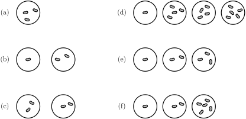

Skip to main content\( \newcommand{\identity}{\mathrm{id}}
\newcommand{\notdivide}{{\not{\mid}}}
\newcommand{\notsubset}{\not\subset}
\newcommand{\lcm}{\operatorname{lcm}}
\newcommand{\gf}{\operatorname{GF}}
\newcommand{\inn}{\operatorname{Inn}}
\newcommand{\aut}{\operatorname{Aut}}
\newcommand{\Hom}{\operatorname{Hom}}
\newcommand{\cis}{\operatorname{cis}}
\newcommand{\chr}{\operatorname{char}}
\newcommand{\Null}{\operatorname{Null}}
\def\Z{\mathbb Z}
\def\R{\mathbb R}
\def\Q{\mathbb Q}
\def\N{\mathbb N}
\def\C{\mathbb C}
\def\W{\mathbb W}
\def\ba{{\mathbf{a}}}
\def\bb{\mathbf{b}}
\def\bh{{\mathbf{h}}}
\def\bu{{\mathbf{u}}}
\def\bv{{\mathbf{v}}}
\def\bw{{\mathbf{w}}}
\def\bx{{\mathbf{x}}}
\def\by{\mathbf{y}}
\def\bone{{\mathbf{1}}}
\def\bzero{\mathbf{0}}
\def\var{{\mbox{var}}}
\def\P{{\mathbb{P}}}
\def\E{{\mathbb{E}}}
\def\cA{{\mathcal{A}}}
\def\cB{{\mathcal{B}}}
\def\cC{{\mathcal{C}}}
\def\cP{\mathcal P}
\def\cN{\mathcal N}
\def\cE{\mathcal E}
\def\cO{\mathcal O}
\def\cF{\mathcal F}
\def\cX{\mathcal X}
\def\nimsum{\, \oplus \,}
\def\mex{{\mathrm{mex}}}
\newcommand{\pile}[1]{\bullet{#1}}
\def\g{g}
\def\kin{k^{\mathrm{in}}}
\def\kout{k^{\mathrm{out}}}
\newcommand{\indeg}[1]{k^{\mathrm{in}}_{#1}}
\newcommand{\outdeg}[1]{k^{\mathrm{out}}_{#1}}
\tikzset{->-/.style={decoration={
markings,
mark=at position .5 with {\arrow{latex}}},postaction={decorate}}}
\newcommand{\nimbleboard}[1]{
\begin{scope}[shift={(.25, .4)}]
\draw (0,-.3) -- (#1,-.3) -- (#1+.45, .7) -- (#1+.45, 1);
\draw (0,0) -- (#1,0);
\draw (.45,1) -- (#1+.45,1);
\foreach \i in {0, ..., #1} {
\draw (\i, -.3) -- (\i, 0) -- (\i+.45,1);
}
\foreach \i in {1, ..., #1} {
\node[style={font=\sffamily\scriptsize}] at (\i - .5, -.15) {\i};
}
\end{scope}
}
\newcommand{\coin}[1]{
\begin{scope}[shift={#1}]
\draw[color=white, fill=white] (-.4, 0) -- (-.4, -.1) -- (.4,-.1) -- (.4,0) -- cycle;
\draw[thick, fill=white] (0,0) ellipse (0.4 and 0.10);
\draw[thick, fill=white] (.4,-.1) arc (0:-180:0.4 and 0.10);
\draw[thick] (0.4,0) -- (0.4, -.1);
\draw[thick] (-0.4,0) -- (-0.4, -.1);
\end{scope}
}
\newcommand{\bean}[2]{
\begin{scope}[shift={#1}, rotate={#2}]
\draw [very thick, fill=gray!50] plot [smooth cycle] coordinates {(-.2,0) (-.175, .07) (-.1,.1) (0,.075) (.1,.1) (.175, .07) (.2,0) (.15, -.07) (0,-.1) (-.15, -.07)};
\end{scope}
}
\newcommand{\heap}[2]{
\begin{scope}[shift={#1}]
\draw[very thick] (0,0) circle ({#2});
\end{scope}
}
\newcommand{\lt}{<}
\newcommand{\gt}{>}
\newcommand{\amp}{&}
\)
Chapter 25 Nim Sums
Exercises Practice Problems
1. Covert to Binary.
Write each of the following numbers in binary by first writing them as a sum of powers of 2.
-
\(14\)
-
\(25\)
-
\(40\)
\(\displaystyle 63\)
Solution.
-
\(14 = 8+4+2\) which is binary = \(1110\)
-
\(25 =16+8+1\) which is binary = \(11001\)
-
\(40 =32+8\) which is binary = \(101000\)
\(63 = 32+16+8+4+2+1\) which is binary = \(111111\)
2. Nim Sums.
Calculate the following nim sums
\(\displaystyle 12 \oplus 10 \oplus 8\)
\(\displaystyle 20 \oplus 15 \oplus 10 \)
\(\displaystyle 23 \oplus 17 \oplus 10 \oplus 4 \)
Solution.
-
We calculate
\begin{equation*}
\begin{array}{r}
1100 \\
1010 \\
\oplus 1000 \\
\hline
0110
\end{array}
\end{equation*}
which is \(6\)
-
We calculate
\begin{equation*}
\begin{array}{r}
10100 \\
01111 \\
\oplus 01010 \\
\hline
10001
\end{array}
\end{equation*}
which is 17.
-
We calculate
\begin{equation*}
\begin{array}{r}
10111 \\
10001 \\
01010 \\
\oplus 00100 \\
\hline
01000
\end{array}
\end{equation*}
which is 8.
3. Nim Sums for Nim Positions.
You have analyzed the following Nim positions in a previous exercise. For each position, calculate the nim sum of the pile sizes. What do you observe?

Solution.
The nim sum of this \(\cN\)-position is 3.
The nim sum of this \(\cN\)-position is 3.
The nim sum of this \(\cP\)-position is 0.
The nim sum of this \(\cN\)-position is 4.
The nim sum of this \(\cP\)-position is 0.
The nim sum of this \(\cN\)-position is 2.
The \(\cP\)-positions have nim sum 0 and the \(\cN\)-postions have nonzero nim sum.
4. Who Wins these Nim Positions?
Use nim sums to determine whether each of these nim positions is an \(\cN\)-postion or a \(\cP\)-position. If it is an \(\cN\)-position, list all of the winning moves.
Solution.
\begin{equation*}
\begin{array}{r}
010 \\
011 \\
\oplus 101 \\
\hline
100
\end{array}
\end{equation*}
The winning move is \((2,3,1)\text{.}\)
\begin{equation*}
\begin{array}{r}
010 \\
010 \\
110 \\
\oplus 100 \\
\hline
010
\end{array}
\end{equation*}
There are three winning moves: \((0,2,6,4)\) and \((2,0,6,4)\) and \((2,2,4,4)\text{.}\)
\begin{equation*}
\begin{array}{r}
001 \\
011 \\
100 \\
\oplus 101 \\
\hline
011
\end{array}
\end{equation*}
There is one winning move: \((1,0,4,5)\text{.}\)